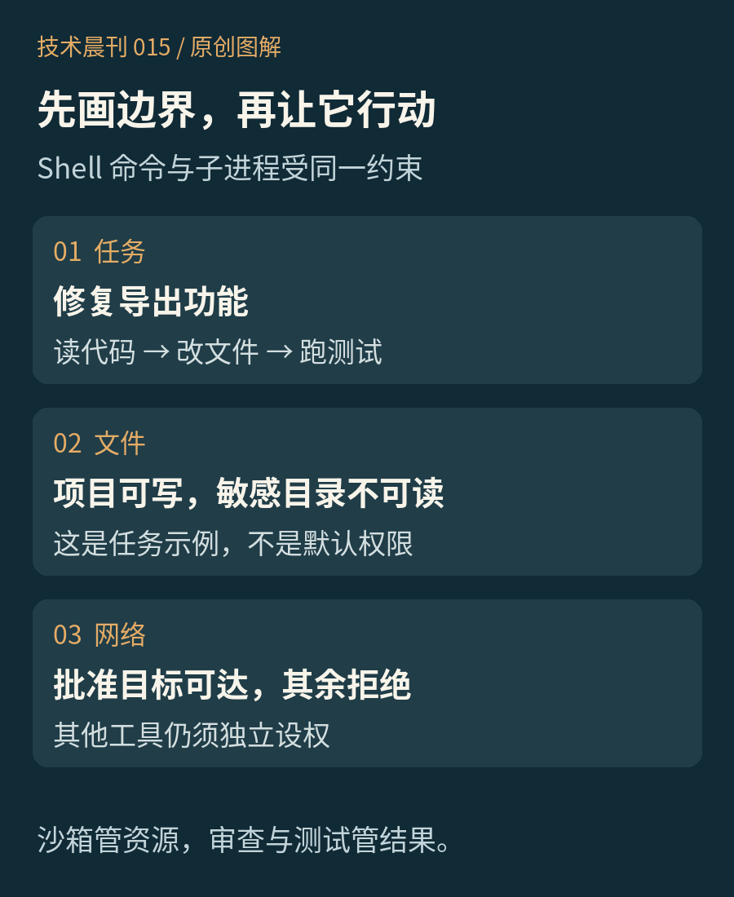

01 / AGENT 技术解析
让 Agent 放手跑测试之前，先把沙箱边界画清楚
让 Agent 自己跑测试，和把整台电脑交给它，中间应该有一道真正的门。
你让一个编码 Agent 修复导出功能。它读代码、改文件，接着想运行测试。你点了一次允许。测试又拉起脚本，脚本再启动另一个进程——这时，你批准的究竟是一行命令，还是它接下来能碰到的一切？
今天只拆一个机制：编码 Agent 的 Shell 沙箱。以 Claude Code 为例，重点不是模型会不会听话，而是即使它走错路，执行环境还允许它走多远。这是已有工程机制的选读，不是今日新功能发布。
把“别碰”从提示词变成执行边界
提示词里的“不要修改项目外文件”是一条行为要求。沙箱则在操作系统层限制进程访问资源：哪些路径可写，哪些位置不可读，网络能连到哪里。模型可以提出动作，但不能仅靠提出动作就获得资源。
Anthropic 2025 年的原文介绍，运行时在 Linux 使用 bubblewrap、在 macOS 使用 Seatbelt，限制也覆盖命令启动的子进程。2026 年的后续文章把这件事概括为控制潜在损害范围。两篇文章讨论的是防线设计，不是“沙箱永远无法被突破”的承诺。

仍然用“修导出”这个任务走一遍
假设项目在 /work/exporter。一个可审查的任务配置是：代码目录可写，依赖缓存按需要开放；私人文件与凭据目录拒绝读取；默认不出网，需要安装依赖时再明确允许目标服务。这里是编辑设计示例，不是可直接复制的产品配置。
这样，测试可以生成报告、创建临时文件。即使某个测试脚本启动子进程，它也仍在同一执行边界里。若脚本试图读私人目录或连接未批准地址，应由边界拒绝，而不是等模型自觉停下来。
失败信息也很重要。一次“连接被拒绝”，可能表示依赖确实缺失，也可能表示脚本正在做任务之外的事。先看它要访问什么，再判断是否应当开放。把整个网络放开，只是把问题藏回去了。
为什么文件和网络要一起管
只限制写文件，仍可能把可读内容发出去；只限制网络，又可能让进程改写以后会执行的配置。两道边界共同缩小风险，但每一项允许都仍有含义：能向某个代码托管域名发请求，不等于只能访问你自己的仓库。
当前官方文档还特别说明，内置代理默认不检查加密连接里的内容。“域名在名单上”不是“请求内容已经安全审核”。因此，不应把敏感数据直接放进可读范围，再寄希望于一个宽泛的域名名单替你兜底。
最容易漏掉的是沙箱外的工具
按本次核验的 Claude Code 滚动文档，Shell 沙箱覆盖 Shell 命令及其子进程；文件工具、MCP 服务与 hooks 不在这一沙箱里。若另一个连接器能改线上数据，Shell 再严格，也没有限制那条路径。工具权限需要独立检查。
同样，沙箱不能判断业务结果对不对。在允许写入的项目内删错文件，仍可能完全符合资源边界。代码差异审查、测试和发布权限，解决的是不同层次的问题。
上线前，验证“拦得住”也验证“做得完”
可以在不含真实秘密的测试工作区做一次边界验收：正常导出测试应完成；子进程读取一个专门放在禁止路径下的无害样本应失败；访问一个未批准的测试地址也应失败。然后检查拒绝记录，确认不是“任务失败后悄悄在沙箱外重跑”。这些是建议的验收步骤，本刊未做产品安全实测。
取舍就在这里：收紧边界会增加依赖配置与兼容性维护，放宽边界又会扩大一次误操作的影响。适合从一个边界清楚的修复任务开始，让 Agent 在里面充分行动，再根据真实需要扩大范围。自主执行的前提，是先知道自主发生在哪里。
来源与版本
核验日期：2026-10-25（UTC+8）。工程机制选读，未绑定某个安装版本；实际行为以所用版本及策略为准。
- Anthropic：Beyond permission prompts，原发 2025-10-20。
- Anthropic：How we contain Claude across products，原发 2026-05-25。
- Claude Code：Configure the sandboxed Bash tool，滚动文档，未单列原始发布日期；本次核对覆盖范围与安全限制。
相关阅读：第012期：凭据与依赖入口。